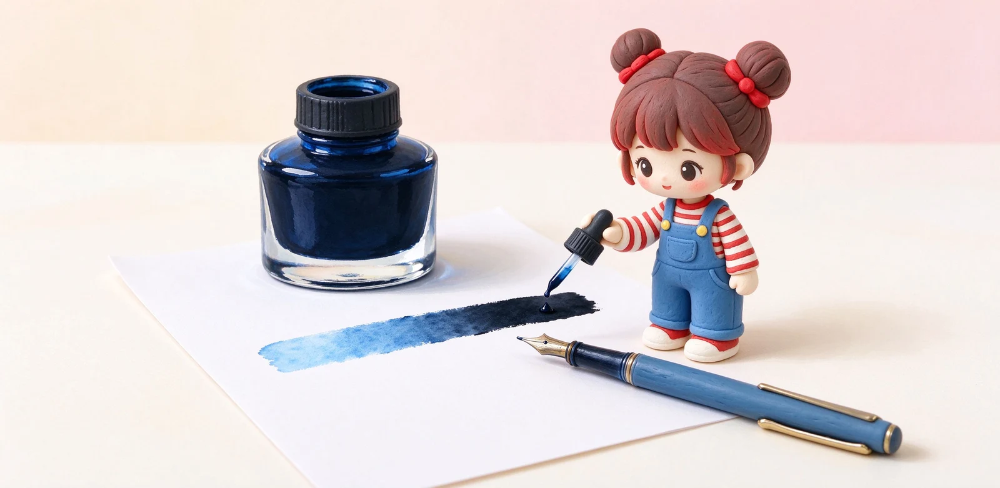
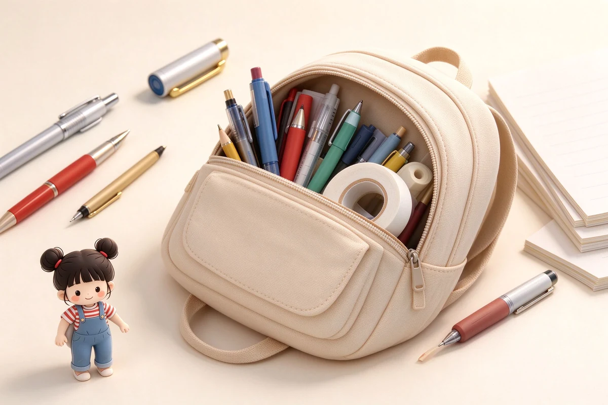

語意摘要：藍黑墨水多屬鞣酸鐵（iron gall）配方，來自中世紀的古老製墨術：剛寫下是藍色，裡頭的鐵質氧化後逐漸變黑、定著在紙裡，因此防水耐光，適合公文與長期保存。它的代價是帶酸性，長期留在不常寫的鋼筆裡可能鏽蝕鋼尖，金尖與鈦尖較不受影響。現代款已改良得更溫和，是上班族與收藏玩家的經典選擇。
藍黑墨為何跟一般藍墨不一樣
一般藍墨是染料，寫下什麼藍就永遠是什麼藍，遇水還會花。藍黑墨走的是完全不同的路：鞣酸鐵配方。它寫下去時看起來是藍的，接觸空氣後裡面的鐵質慢慢氧化，顏色一天比一天深，最後沉成不會被水洗掉的深灰黑。
這正是它被拿來寫公文、簽正式文件的原因：寫完定著後防水、耐光、不容易被竄改，放十年字跡還在。Pelikan 官方就形容自家 4001 藍黑是鞣酸鐵墨，比一般寶藍、亮黑持久得多。
顏色會自己演變：這是特色不是瑕疵
剛寫完是漂亮的藍黑，過幾週、幾個月後慢慢氧化成偏灰的深色——Pelikan 官方也坦承 4001 藍黑會隨時間從藍黑轉向灰色，但始終清晰可見。對古代文書來說，這是它能留存千年的本領；對現代人來說，是日記本上的時間印記。
也因此，藍黑墨的「當下顏色」跟「半年後顏色」不同。喜歡它的人愛這種時間感，只想立刻看到飽和黑的人，可能會覺得它寫完不夠黑。

鞣酸鐵對鋼筆的小脾氣：偏酸要勤洗
重點來了：鞣酸鐵墨帶酸性。它對紙是友誼的（讓字定著），對金屬筆尖卻略帶腐蝕性。原廠與藏家的共識是：偶爾使用、用完定期沖洗，幾乎沒問題；但把裝著鞣酸鐵墨的筆丟著好幾個月不動，酸性長期浸泡，鋼筆尖可能生鏽。
| 筆尖材質 | 對鞣酸鐵的耐受性 |
|---|---|
| 金尖（14K/18K） | 佳，抗鏽不易被腐蝕 |
| 鈦尖 | 佳，本來就是抗鏽材質 |
| 鋼尖 | 需小心，別長期裝著不動 |
| 老舊、密封不良的筆 | 建議避用酸性墨 |
現代藍黑墨怎麼選？
傳統鞣酸鐵配方早在數十年前就被現代化改良，降低腐蝕性、也能用在活塞與卡水筆上。常見的選擇包括：
- Pelikan 4001 藍黑：歷史悠久的經典，氧化後偏灰黑，歐洲公文常見。
- Rohrer & Klingner 系列：有從傳統鞣酸鐵改良、適合鋼筆的款式，耐光定著。
- 白金、百樂也有自己的藍黑款，走染料或改良配方，口感溫和。
什麼人適合藍黑墨？
藍黑墨其實非常實用：它比純黑柔和、比純藍正式，寫筆記、簽單子都好看又正式。上班族寫公事、學生寫重要報告，用藍黑比黑墨多一點溫度，比藍墨多一分穩重。
常見問題 FAQ
藍黑墨水為什麼是公文經典？
藍黑墨寫下去為什麼會變色？
鞣酸鐵藍黑墨會傷鋼筆嗎？
Pelikan 4001 藍黑是什麼定位？
一般上班族適合使用藍黑墨嗎？
資料來源與核實依據
- Tinte 4001 Blue-Black（iron gall、由藍黑漸變灰、耐光持久）（Pelikan Passion）
- Rohrer & Klingner Writing Ink（含兩款改良鞣酸鐵、永久耐光）（L Cornelissen & Son）
- KWZ Iron Gall Inks（長期閒置對鋼尖腐蝕、金鈦尖抗鏽）（Vanness Pen Shop）
- Pelikan 4001 Blau-Schwarz（鞣酸鐵氧化變色實測）（pens-and-freaks）
相關文章推薦

鋼筆墨水怎麼選？染料、顏料、防水墨水差別與新手入門
新手第一瓶墨水，九成情況選「水性染料墨水」就對了：顏色飽滿、不傷筆、好清洗；顏料跟防水墨水是畫圖、要防潑水才需要的進階款。
防水鋼筆墨水有哪些？繪圖、手帳用防水墨水與鋼筆相容性
防水墨寫在紙上乾透後不怕水，但它多半是顏料配方，會沉澱、要勤洗筆；畫水彩線稿選白金碳黑，寫正式文件則找永久墨。

上班族公事包放哪幾支筆？商務書寫與簽名筆挑選邏輯
公事包裡放三支剛剛好：一支中性筆記會議、一支穩當原子筆應付各種紙張簽名、一支鋼筆或質感筆撐正式場合，多了只是增加漏墨風險。